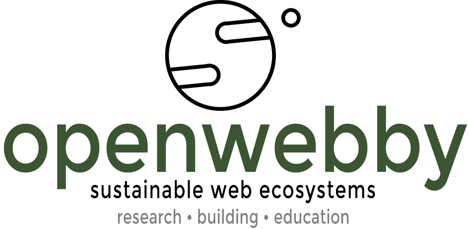

We build right-minded web solutions and teach these technologies to the full range of web technology learners and users around the globe. Openwebby is a business service company, a community-based, interactive elearning module (inspired by the Diversity of Knowledge model), an industry-relevant blog --- a mashup of user experiences which the experiential web has become.
At it's core openwebby is an open source responsive web and native mobile app framework for teaching and learning about the building of sustainble web systems.
The idea of openwebby began as a traditional, paperback book and ebook titled Sustainable Web Ecosystem Design which was published by Springer (the international publisher of science, technology, and medicine) in 2013. However, something continuous was necessary for effective teaching and learning about proper web building and it's inherent often vicissitudes.
20+ years of experience in teaching hybrid, online and in-residence at universities around the world; building and maintaining enterprise level and high-traffic educational and research web sites and native mobile applications; authoring on these topics; and developing approachable, asynchronous instructional documentation for college freshman through seasoned engineers and CEOs has taught us that a lightweight, interactive openwebby was a natural fit as a composite of these various communication models.
Only through years of web technology research, building, and education have we learned that quality research builds profound education.
Welcome to openwebby.
----
Logo: Earth by Nikki Rodriguez from The Noun Project. Font is Montserrat by Julieta Ulanovsky. Openwebby, Sustainable Web Ecosystems, Research Building Education, and all content of this website are registered trademarks of openwebby and Greg O'Toole. All rights reserved.
openwebby offers a full range of the highest quality, professional research, building, and educational services in the growing web technology industry.
Browse through our specialities and feel welcome to contact us with any further questions or inquiries.
-----
Detailed project description documentation with specific needs, requirements and business, educational, or research goals
Stakeholder rapport with frequent project updates
Agile, up-front project schedule with transparent budgeting and invoicing
Target user group research and development (resulting in informed data-driven user personas and user flows)
Optimized information architecture based on target user research
Intuitive taxonomy and site vocabulary
User experience-driven web architecture
Project-wide style guides (including fonts, colors, images, other media, and theming personality and brand)
User interface design for large-screen, high-definition tv, desktop, tablet, mobile environments
Responsive web, native mobile, or hybrid app development
Custom Drupal module design and development
Code versioning control and shared repositories
Reliable, 99% uptime hosting and knowledgable devops
Full deployment including respective marketplaces for native apps
SEO gold search engine optimization
Future-friendly project maintenance and progressive enhancement
Technical writing and documentation for a wide scope of science and business applications
Technology training and elearning documentation and management, online and in-residence
Subject matter expertise and consulting
If we can help, please let us know.
openwebby is currently at work developing framework products for building, teaching and learning a sustainable web.
Stay tuned to learn more on our forthcoming open source frameworks.
For more information about openwebby and to talk about how we can help reach your business and education project goals, please contact us.
Dr. Greg O'Toole, Ph.D.
greg@openwebby.com
Visit openwebby online at www.openwebby.com.
Only through years of web technology research, building, and education have we learned that quality research builds profound education.